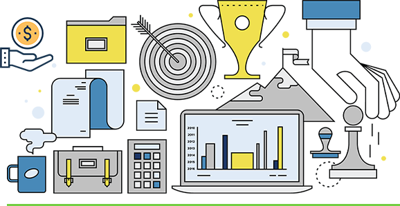

About Us
E-Cell, JSSATE Noida assists budding entrepreneurs by lending them a platform to materialise an ‘IDEA’ to a ‘PRODUCT’. Big time, you little wizards personify to successful businessmen upholding entrepreneurship as a career option and set a razzle-dazzle innovative exemplar. JSS E-Cell is a non-profit organisation which will act as a platform for association of likeminded students who would eventually loom as “employment creators” rather than “employment seekers”.

- Small and Medium enterprises play a vital role for the growth of Indian economy by contributing 45% of the industrial output, 40% of exports ,42 million in employment, creates 1 million jobs every year and produces more than 8000 quality products for the Indian and International markets.
- In the present scenario of low economic growth, less industrial production on one hand while on the other hand, thousands of students passing out of colleges without proper employment opportunities possess a serious threat to the stability and growth of our country.
- Entrepreneurs could offer a solution to some of these challenges by starting new businesses with new products or services. This creates jobs and a fresh opportunity for an economy to produce additional goods or services.
- In this way, entrepreneurs grow both the demands idea and the supply side of the economy. This creates opportunity and improved quality of life.